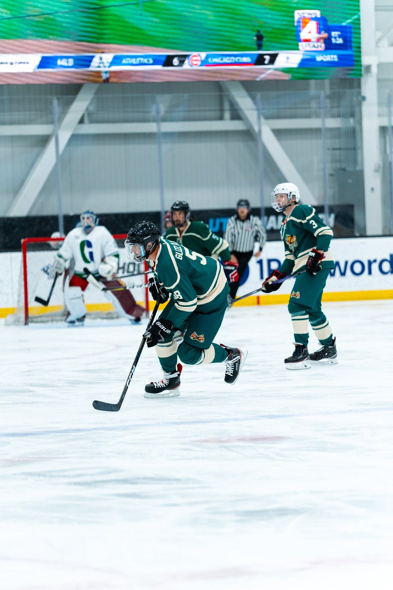
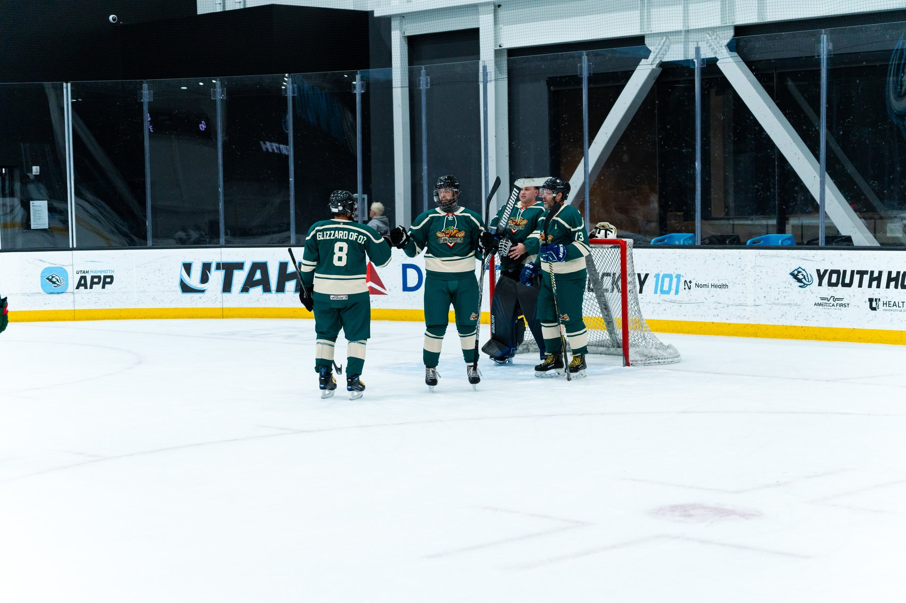

Outdoor Ice Skating in Utah: A Winter Guide for Hockey Fans
November 16, 2026 • 5 min read • By Utah Glizzies HC

The NHL is bringing outdoor hockey to Salt Lake City on New Year's Eve, and suddenly everyone in Utah wants to skate somewhere with a view. Good news: Utah has a handful of outdoor rinks that turn up every winter. Here is where to look, what to expect, and how to turn a lap around the rink into actual hockey skills.
Where to Skate Outdoors in Utah
Nov
Most outdoor rinks open around November and run through winter
5+
Outdoor skate spots along the Wasatch Front and Park City
Check
Dates and hours change every season. Confirm before you drive
Gallivan Center, Salt Lake City: a downtown outdoor rink at 239 S. Main St. It usually opens around November and closed its most recent season in early March.
Resort Center, Park City: an outdoor rink at the base of Park City Mountain Resort with lights, music and holiday decor.
Millcreek Common: a skate loop that typically runs roughly November through February or March.
J. Lynn Crane Park and the Bountiful Ice Ribbon: seasonal ice ribbons that generally run November through February.
Season dates for this winter were not all posted when we checked, so treat the list as a starting point and check each rink's own schedule.
Public Skate Is Not Hockey (Yet)
Outdoor rinks are built for casual skating. Most do not allow sticks and pucks, so do not show up with your gear bag and a dream. What they are great for is the part of hockey that matters most at the start: getting comfortable on your edges, gliding, and not panicking when you move.

Every Glizzie started with a wobbly lap around somebody's rink.
Drills You Can Do on Any Public Rink
Glide on two feet. Push off, bend your knees, and hold the glide as long as possible.